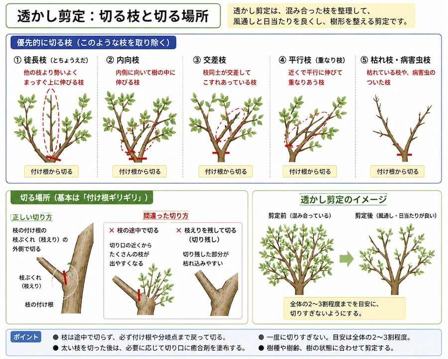

公開日：2026年9月 ｜ 最終更新：2026年9月

| 枝の種類 | 枝の説明 | 注意事項 |
|---|---|---|
| 徒長枝（とちょうえだ） | 他の枝より勢いよく、まっすぐ上に伸びる枝 | 付け根から全て切る！！ （全て切るのではなく、2−３割程度） |
| 内向枝 | 内側に向いている枝 | |
| 交差枝 | 交差して枝同士が擦れている枝 |
「付け根ギリギリを切る」（一度に切りすぎない。目安として全体の2-3割まで）
「二又の分岐点で、どちらかを切る。途中で切らない!」
| 樹種 | 適当な時期 |
|---|---|
| 落葉樹 | 葉が落ちた冬に |
| 常緑樹 | 春または秋（樹種によって適期が異なる） |
| 金木犀など花木 | 花が終わってから透かし剪定を |
| 時期 | 処理方法 |
|---|---|
| 冬 | 落葉樹の強剪定、高さを止める |
| 春から | 常緑樹の剪定 |
| 秋 | 常緑樹の強剪定 |
「樹型」は、上を細く、下を広げる「ピラミッド型」を基本とする。
「切り戻し」：伸びた枝を枝の分かれ目（分岐点）まで戻ってどちらかの付け根を切る。
「心留」：高さを抑えるばあは、適切な枝分かれの位置まで戻って切る。花後、すぐに古い枝を根元なら間引く剪定が基本です。
強く短く切り詰めるより、「太い枝を減らす」ことで勢いを落とします。
基本的な方法